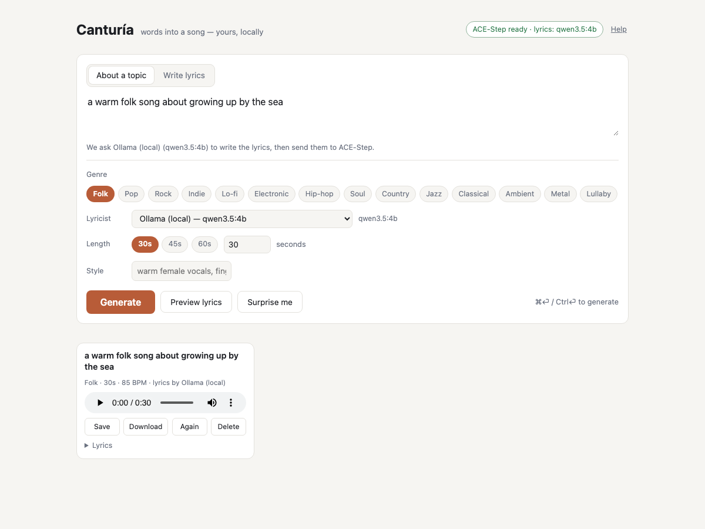

Words into a song.
Describe what the song is about, or paste your own lyrics. Choose a genre and a length. Ollama writes, ACE-Step sings.
macOS, Windows, and Linux.

Download Canturía
The desktop app bootstraps a private Python runtime on first launch. Your server URL and lyricist settings live in your own config file.
macOS builds are signed and notarized. Windows and Linux builds are unsigned; the first launch downloads a private Python runtime (~1 min).
Three ways to make a song
One screen, no studio. The topic path is reliable; the other two give you more control or more surprise.
About a topic
Type a theme or a sentence. Your chosen lyricist writes the words, then ACE-Step sings them with an exact length and English vocals.
Write lyrics
Paste your own [Verse] / [Chorus] lyrics. They go straight to ACE-Step; the length is honoured exactly.
Surprise me
ACE-Step invents everything itself. Experimental: length and language can wander. Use it for a happy accident.
Describe
Type what the song is about, or paste lyrics.
Preview
See and edit the lyrics before committing to audio.
Sing
Save the MP3 and a JSON sidecar to your Music folder.
Also a CLI and a Python library
The same engine powers the desktop app, the web UI, and the command line. Install it, point it at your ACE-Step server, and go.
canturia topic "a birthday song for grandma"canturia lyrics "..." --lyricist ollamacanturia compare "..." --with ollama --with acestepcanturia serve
pip install "canturia[serve]"
ollama pull qwen3.5:4b
canturia serve
# open http://127.0.0.1:2268Local-first, by design
No account. No telemetry. No hosted service. The only network egress is the request to the ACE-Step server you configure and the local Ollama call that writes lyrics.
Bring your own provider: Ollama locally, an OpenAI-compatible endpoint with your own key, or ACE-Step's experimental LM for comparison. Keys stay in your config, not in a browser.
- Lyrics and audio stay on your machine.
- Session gallery is in memory; Save is explicit.
- Open source, MIT licensed.
- Desktop, CLI, and web share one engine.
- No cloud dependency for the core flow.